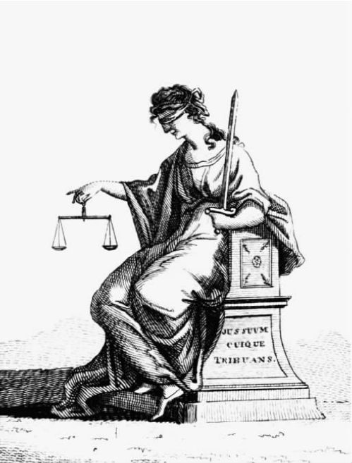

在《实践理性批判》之前，康德先出版了《道德形而上学的基础》，对自己的道德进行了出色的概括。这两部著作研究的是“实践理性”：运用这种说法，康德有意识地重申古代关于理论知识和实践知识的区分。所有理性的存在者都能认识到了解真理和运用真理之间的区别。判断和决定都可以基于理性，并且通过理性来改进，但是只有判断才能为真或为假。所以，必须存在着一种方式来运用我们的理性能力，这种运用的目标不是真理而是其他的东西。这个其他的东西是什么？亚里士多德认为是幸福，而康德认为是义务。正是在分析义务观念的过程中，康德那独特的道德观得到了表达。
假定我们确立判断的客观性，并且为那些作为发现过程之基础的科学准则提供了必要的形而上学基础。然而，仍然存在客观性的另一个问题，这是由实践知识而非理论知识提出的。我们能客观地知道该做什么吗？或者我们必须仅仅依赖我们的主观倾向来指引自己吗？康德要解决的正是这个问题，通过解决这个问题康德为共同的道德直观提供了有史以来最形而上的、最抽象的基础。
自由的二律背反
康德的伦理学始于自由的概念。根据他著名的格言——“理应即能够”，正确的行为必须总是可能的。也就是说，我必须总是可以自由地去践行。道德行动者“判断他能够做某一件事情是因为他意识到自己应该这么做，并且他认识到自己是自由的。如果不是有道德律，他永远也不会知道这个事实”（《实践理性批判》，30）。换言之，道德实践将自由的理念强加于我们。但是康德认为，从理论的角度来看，这个理念包含着一个矛盾。在第一部《批判》的第三个二律背反中，康德揭示了这个矛盾。
发生在自然秩序中的每一个变化都有原因：这是分析论的“既定原则”，而且“无一例外”（《纯粹理性批判》第1版，536；《纯粹理性批判》第2版，564）。若果真如此，自然界中的每个事件就都受制于不可避免的必然性之链。与此同时，我视自己为我的行为的发起者，在不受外力约束的情况下，同时导致那些行为的发生。如果我的行为是自然的一部分，这似乎与自然中的每个事件都受制于因果必然性这一观点相悖。反之，如果不是自然的一部分，我的行为就处于因果联系之外，而我的意志也就不是自然世界任何事件的发起者。
如果我真的是 自由的，那么这里只有一项矛盾。有时康德仅满足于声称，我必须设想自己是自由的。对于世界上所有的行为以至于理性的决定来说，一个先决条件是，主体是自己行为的发起者。而且，康德还提出，如果摈弃这种理念，我就会丧失自己作为主体的感觉。认为世界受制于必然性之链，这种理性视角同样认为世界是拥有自由的。康德偶尔会更进一步，主张实践理性是“首要的”（《实践理性批判》，120—121），意思是所有的思想都是对自由的应用，所以，如果实践理性不可能，我们就无法连贯地思考。在此情况下，我的自由的确定性就与任何事物的确定性同样显著。（在萨特的作品中，这个论断也出现了，只是多了些修辞。萨特有关道德生活的存在主义理论在很大程度上来自于康德。）如果这是真的，自由的二律背反就会变得尖锐起来。因为我们受实践理性所迫必须承认我们是自由的，但是出于理性我们必须否认这一点。
康德觉得这个二律背反必定存在解决之道，因为在实践领域，应用理性是合理的。实际上，正是实践理性告诉了我我是什么。纯粹 理性走向自我矛盾的虚幻进程不应该阻止实践 理性，二律背反必定能通过实践理性得到解决。纯粹理性对世界的解释似乎留有一个“空缺”，道德主体应该处于这个空缺中。“纯粹实践理性已经利用纯概念世界中一种明确的因果定律，即道德律填补了这个空缺。”（《实践理性批判》，49）这个全新的“因果定律”被称做“先验自由”，它规定了道德主体的条件。这条定律仅适用于自然领域（经验领域）。然而，自由不属于自然，而恰恰属于因果关系等范畴无法适用的“纯概念的”或是先验的领域。我存在于自然的世界中，正如存在于诸表象之中的一个“表象”。但是我也作为“物自体”存在，受到实践理性规律而非因果关系的束缚。这并不意味着我是两种 东西，而是从两种截然相反的角度理解的同一物。因此，“认为表象之物（ 属于感觉世界）从属于某些定律，而这同一物作为物自体 又独立于这些定律，这么说毫无矛盾之处”。此外，道德主体必须总是“以这个两重性理解和考虑自己”（《道德形而上学的基础》，453）于是，自由就是一个并未应用于经验世界的先验“理念”。而且，得知我们是自由的，我们就可以知道我们是自然的一部分，也是先验世界的成员。
先验自我
先验自由理论既令人费解又十分吸引人。它的魅力在于有望进入先验世界，它费解的一面来自康德之前提出的证明：这种进入是不可能的。根据康德自己的论断，关于先验世界，我们无事可知，也说不出有意义的东西。康德认识到这个难点，而且承认“要求一个人以自由的主体这一身份把自己当做本体，同时又从物理自然界的视角把自己看成自己的经验意识中的现象”，这是“自相矛盾的”（《实践理性批判》，6）。他甚至进一步声称，尽管我们不能理解道德自由的事实，“我们却能理解它的不可理解性 ，公允地说，对于一种试图将它的原则推至人类理性极限的哲学来说，我们也只能要求这些”（《道德形而上学的基础》，463）。
如果把实践理性的基础——“先验自由”，与自然知识的基础——“统觉的先验统一”联系在一起，我们就能进一步解释康德的理论。我们观察世界的角度包括两个不同的方面，而且不管是意识的统一还是先验自由，都不能从我们关于经验世界的知识中推断出来。但是两者都获得了先天的保证，从而成为我们所拥有的知识的先决条件。前者是我们关于真理的所有知识的出发点，后者是所有慎思的出发点。说它们是先验的，并非是从它们包含先验对象的知识这个肯定方面来讲，而是从它们被对我们理性力量的合理运用所预先假设这个否定方面来讲。所以，它们处于可知事物的极限上。作为观察 经验世界的角度，自由不可能成为经验世界的一部分。因此，关于我们自身的自由的知识成为了“统觉”的一部分，统觉规定着我们的视角。（此解释的根据见于第一部《批判》，特别是第1版546—547，第2版574—575。）
纯粹理性试图通过概念来了解先验世界。换言之，它试图形成积极的本体概念。这种尝试注定是要失败的。然而，实践理性并不在乎真理的发现，它不强加任何概念于它的对象。因此，它永远也不会将我们带入谬误，形成先验自我的积极概念。我们只是通过运用自由在实践上认识这个自我。我们无法将这种知识转化为关于我们本质的判断，但我们可以将它转化为其他东西。这所谓的其他东西就是根据实践理性的规律得出的，这些规律就是关于行动的先天综合原理。正如存在着可以从意识的统一中导出的关于自然的先天规律，也存在着可以从先验自由的视角导出的关于理性的先天规律。这些不会是关于真假的规律，它们不存在描述、预测和解释。它们将是关于做什么的实践规律。自由主体在所有实践推理中受制于它们，因为接受它们是自由的预设条件，而如果没有自由，实践理性将无法实现。
先验自我是一种视角，或是一种特殊的本体——的确，康德一直在这两种观点间摇摆不定。他甚至尝试通过实践理性来恢复那些关于上帝、灵魂和不朽的结论，这些结论在之前已被他斥为纯粹理性的幻相。暂时我不想跟随康德进入这些神秘的领域。但是读者们应该记住，我只是延迟讨论康德的伦理学说所引发的深奥的形而上学问题。
实践理性问题
康德关于自由的理念，放到它想要解决的问题的语境下会变得更加清楚。理性的存在者不仅是作为自我意识的知识中心存在，同时也作为主体存在。他们的理性并不疏离于他们的主体性，而是形成了其中的一部分。也就是说，对于一个理性的存在者，不仅存在着行动，而且存在着关于行动的问题（ 问题就是“我应该做什么？”），而这个问题需要一个合理的答案。我的合理性表现于一个事实，即我的一些行动是故意而为的（用康德的话来解释就是，它们来自我的“意志”）。对于所有这样的行动，都可以问这个问题：为什么那样做？这个问题并非寻求原因或解释，而是在寻求理由。假设有人问我为什么在街上打一位老人，若答“因为我大脑的电脉冲促使肌肉收缩，进而导致我的手触碰了他的头”，这个回答会显得荒谬且答非所问，不管它作为一种因果解释有多精确。若答“因为他惹恼了我”，也许显得不够充分，因为没有给出很好的理由，但却一点也不荒谬。理由是用来使行动合理化，而不是主要用来解释行动的。它们指向行动的根据，那是一个主体决定做什么的基础。
实践理性或关心目标，或关心手段。如果我头脑中有一个目的，我可能会审慎考虑运用手段来实现这个目的。所有的哲学家都认同这种推理的存在，但是很多哲学家觉得，它并没有显示对理性能力特殊的“实践”运用。这仅仅是付诸应用的理论理性。康德本人也同意这个观点。他认为“技术准则”（如何寻求达到目的的手段）仅仅是理论原则（《实践理性批判》，25—26）。怀疑论哲学家对此有更深入的探讨。例如休谟认为，在实践问题上理性没有其他作用。所有的推理都关心手段。理性不能产生我们活动的目的，也不能证明目的的合理性，因为用休谟的话来说，“理性是而且只应该是激情的奴隶”。我们的目的正是来自于“激情”，因为只有激情才能为行动提供最终的动力。仅当我们已经受到激励而决定遵从理性时，理性才能劝服我们采取行动。如果是这样，康德认为，就不可能存在客观的实践知识，因为理性无法解决做什么的问题。
康德认为实践理性是可能的。他肯定了一个（常识）信念：理性可以限制和解释的不仅是手段，还有目标。在这种情况下，就可能存在对实践理性的客观运用。之所以可能是客观的，因为它仅基于理性向所有理性存在者推荐行动的目的，而不管他们的情感、利益和欲望如何。然而，要想这一点成为可能，正如休谟所说，理性必须不仅解释我们的行动，而且要激发我们行动。如果理性不能同时促使 我行动，理性在作决定的过程中就毫无作用。于是它就不是实践的。如果理性只能产生关于世界的判断和由此而生的推断，那么很难看出它如何能 成为行为的动机。这样或那样的判断或真或假，依我的目的，它们可能促使我采取各种各样的行动。如果这些目的缘自“激情”，理性在决定行动方面就毫无作用。因此，理性能变成实践的唯一方法就不在于得出判断，而在于形成律令。律令并不描述世界，而是将自己赋予主体，如果主体接受，便决定主体做什么。因此，如果存在着仅从理性运用中而生的律令，那么理性本身就可以促使我们行动。“利用实践法则，理性直接决定意志。”（《实践理性批判》，25）
意志的自律
康德的道德哲学来自于对先验自由观念和理性律令的结合。他相信，关于目的的推断必须总是假设在他的形而上学中被视为可能的先验自由。自由是为自己的行动定制目的的力量。任何从外部根源引出的我的目的，同时也使我自己受制于那种外力。任何决定我行为的自然过程，都将它的原因的不自由性强加于我。于是我就成为了自然力量寻找其法则的被动渠道。如果我的行为被视为不自由，那是因为某种意义上来说这并不真的是我的 行为。
由我发出的行动只能 归因于我，因而是真正意义上的我的行为。就这种行为来说，我是自由的。不论何时行动，我 都能自由地行动，而当一些其他的主体通过我采取行动，我便是不自由地行动。这引起了以下的问题：我 是什么？答案很明显是“我是先验自我”，因为这从自然的因果性方面解释了我的自由。但是现在，康德在这个答案的基础上补充了意志的理论。不管何时我决定行动，一个行动便因我而生，这只是基于对它 的考虑。我并不参考我的欲望、利益或任何其他的“经验条件”，因为这样一来自己就会受制于自然的因果性。我只是考虑这个行动，出于它自身的缘故而把它选定为它自身的目的。这就是自由行为，即单由理性引出的行为的范例。康德觉得，这样一种行为不能归因于“自然的”力量，或是“经验的”因果性之链。它自发地产生于形成我意志的理性过程。
于是，自由就是被理性支配的能力。在前一部分中讨论的理性律令是“自由的法则”：理性借以决定行为的原则。所以在“自然因果性”之外还存在着“自由因果性”，而自由无非是遵从前者，同时也许还背叛后者。康德将这种仅受理性激发的能力称做意志的自主性，并且他将此与受制于外在原因的主体的“他律”进行对比。康德所谓的外在原因是指任何属于“自然因果性”的原因，也就是任何不仅仅是从理性中找到的原因。因此一项缘自欲望、情感或利益的行为是“他律的”。
于是康德现在提出了能自律的主体 的概念。这个主体可以克服所有来自他律的因素——例如自利和欲望——的驱使，如果它们与理性发生冲突的话。这样的存在者把自己假定为“先验存在”，因为他无视自然的因果性而总是将他的行为归因于“自由的因果性”。只有自律的存在者才拥有真正的行为目的（相对于纯粹的欲望对象而言），而且只有这样的存在者，作为理性选择的体现，才值得我们尊重。康德继续声称，意志的自律“是所有道德法则以及符合这些道德法则所依据的唯一原则。另一方面，意志的他律不仅不能成为任何义务的基础，而且与由此产生的原则相悖，与意志的道德相悖”（《实践理性批判》，43）。由于自律仅仅表现为遵从理性，又因为理性必须总是通过律令指导行动，所以自律被描述为“意志的一种特性，凭此特性意志成为它自身的法则”（《道德形而上学的基础》，440）。而且它是“人类本质以及所有理性本质的尊严的基础”（《道德形而上学的基础》，436）。
形而上学难点
现在我们必须回到先验自由的形而上学问题。其中有两个难点特别突出，因为它们与康德自己在莱布尼茨的理性主义形而上学中发现的难点相对应。首先，先验自我是如何成为个体的？是什么将这个 自我变成了我 ？如果我的本质特征是理性以及由此而生的主体性，那么，既然理性法则是普遍的，我该如何与任何其他受制于这些法则的存在者区分开呢？如果本质特征是我关于世界的“观点 ”，那么康德该如何避免像莱布尼茨那样，将自我视做单子，这个单子正是由它的观点定义，但是却存在于它所“表征”的世界之外，不能与这个世界包含的任何事物建立真正的联系？
第二（或者倒不如说是继续之前的异议），先验自我如何与经验世界相联系？尤其是它如何与它自己的行为相联系，这种行为或者是经验世界的事件，或者完全无效？正如康德所承认的，我必须作为自然领域中的“经验自我”存在，同时作为自然领域之外的先验自我存在。但是，既然原因的范畴只能应用于自然，那么先验自我就仍然是一直无效的。在这种情况下，它的自由为什么如此宝贵？康德诉诸的观点是，原因的范畴指示时间（即前后）的联系，而理性与从理性中产生的行为的联系完全不是时间上的（《实践理性批判》，94—95）。在第一部《批判》（第1版538—541，第2版566—569）中，康德关于这一点的迂回讨论并没有清楚解释，提供给先验自我的理性如何能够激起（进而解释）经验世界中的事件。
关于这些难点，康德偏爱的立场可以用以下的断言来归纳：作为无法应用范畴的纯“理智”领域的成员，我们自己的观念“对于理性信念来说总是有用且合理的，虽然所有的知识都止步于这个领域的门槛”（《道德形而上学的基础》，462）。与此同时，康德继续认为人类自由的悖论是不可避免的：我们永远不能通过理论理性解决这个问题，尽管实践理性向我们保证它有解决之道。然而，我们必须承认“纯粹理性有权扩充自己的实践运用，这种扩充的程度在思辨运用中是不可能的”（《实践理性批判》，50）。所以我们可以放心地接受实践理性的裁断。当然，我们可以一直重新提出自由的问题：于是变成“实践理性是如何可能的？”我们知道它的确 可能，因为如果没有它，我们观察世界的视角将会消失。但是“纯粹理性如何成为实践的——要解释这个问题已经超出了人类理性能力的范围”（《道德形而上学的基础》，461）。
运用令人信服的逻辑，康德可以从先验自由的基础上推断出一整套常识道德体系。既然在这个推断的最后还是没能解决自由的悖论，康德关于我们永远不能理解它的提法也许未必全错。
假设律令和绝对律令
实践思维可划分为假设律令和绝对律令。前者典型地以“如果”开头。例如，“如果你想留下来，就礼貌些。”在这里，目的是假设的，律令陈述了达到目的的手段。所有这类律令的效力可以根据“至高原则”——“想要达到目标，就要通过这个手段”来建立。康德认为这条原则是分析的（它仅从概念推断它的真理性）。但是，假设律令虽然可能是有效的，却永远也不可能是客观的，因为它们总是有条件的 。它们只给那些之前提到的有目的的人（在以上提到的例子中，就是指想要留下的人）提供理由，而对其他任何人都没有约束力。甚至对于告诉我们做什么能让自己快乐的“慎重的忠告”来说，这也是正确的。因为根据人性，快乐的概念所指的是我们不可避免要去渴求的东西；将我们与快乐相联系的假设律令所以能普遍地运用，是因为人性是所有理性主体的普遍条件，但是它们并非必然 能得到运用。“每一个人出于自愿而不可避免想要的东西，不从属于义务 这一概念，因为义务是指被迫 去实现一个非自愿选定的目的。”（《道德形而上学》，385）于是，所有的假设律令似乎仍是主观的，建立在个人欲望的基础上，而且没有一个与真正的“理性戒律”相符。
绝对律令一般不包含“如果”。它们告诉你绝对 要做什么。不过，它们可能受到理性的辩护。如果我说“关门！”，那么我的命令是任意的，除非我可以回答“为什么？”如果我给出了满意的答复，那么律令便约束了你。然而，如果答案涉及了你的某种独立利益，这个律令就不再是绝对律令，比如“如果你不想受到惩罚，关门。”仅当答案将行为本身 表现为目的时，我们才能拥有非任意的绝对律令。它的标志是出现了“应该”，例如“你应该关门。”在绝对的“应该”中，我们拥有理性的绝对律令。
跟随康德，将假设律令和绝对律令之间的这种常见的区别，与根据手段推断和根据目的推断之间的区别对应起来，这样做并非没有道理。于是实践理性的问题变成了“绝对律令如何可能？”此外，康德认为，道德只能通过绝对律令来表述。“义务这个概念要想有意义，要想对我们的行为有真正的律法权威，就只能通过绝对律令而丝毫不能通过假设律令来表述”（《道德形而上学的基础》，425）。遵从假设律令就意味着总是遵从前项所描述的条件。因此它总是涉及意志的他律。然而，遵从绝对律令，由于它仅源自理性，所以必须总是自主的。这样，康德同样将两种律令之间的区别与他律和自主之间的区别对应起来，从而将绝对律令的问题与先验自由的问题联系起来：“绝对律令之所以可能，是因为自由观念将我变成理智世界的一员。”（《道德形而上学的基础》，454）
但是，绝对律令要想成为可能，它们也需要一条说明理性如何发现它们的至高原则。所以，实践理性与理论理性所面临的问题同样宽泛，要求同样的答案。我们必须表明，综合的先天实践 知识如何可能。正如我们所见，假设律令的至高原则是分析的。所以，假设律令对主体没有任何真正的要求，而仅仅是将主体的目的与达到目的的手段联系起来。然而，绝对律令提出的是真正的、绝对的要求：在这种意义上，它们是综合的。此外，由于它们的基础只存在于理性，它们必须先天地被视为依据。绝对律令的特有形式本身就阻止它从任何其他的来源——例如欲望、需要、利益或主体的任何其他“经验条件”——获得要求遵从的权威。尤其是，无法从“人类本质的特殊属性”中推出绝对律令（《道德形而上学的基础》，425）。所以，康德摒弃了他所处时代所有主流的伦理学体系，认为它们无法解释从属于道德法则的“绝对必要性”。这种必要性只能通过具有先天基础的理论来解释。因此，所有对经验条件，甚至是对人类本质最为确凿的事实有所指的东西，都必须排除于道德的基础之外（《道德形而上学的基础》，427）。
绝对律令
各种绝对律令的至高原则被称为那个 绝对律令，这里假设只存在或者只应该存在一条这样的原则［也许是为了避免义务冲突的可能性（“就职论文”，20）］。事实上，这条原则有五种不同的重申形式，其中两种涉及新的概念。所以，通常将绝对律令看做一种复合的理性法则，包括至少三个独立的部分。以其首要的、最著名的形式，理性法则引申出如下内容。
如果我们想找出一个仅基于理性的律令，我们就必须从理性主体间所有的区别中进行抽象，无视他们的利益、欲望、野心以及所有限制行动的“经验条件”。只有这样，我们才能将我们的法则仅建立在实践理性的基础上，因为此时我们已从其他任何基础出发进行了抽象。通过这个抽象过程，我得出了“属于理智世界的一员的观点”（《道德形而上学的基础》，454）。这是一个存在于我经验之外的观点，因此可被任何理性的存在者接受，不管他处境如何。于是，我所提出的那个法则将成为一条对所有理性存在者普遍适用的律令。当决定以我的行动作为目的时，我将受制于理性，“只根据那个我同时想要它成为普遍法则的准则去行动”（笔者根据《道德形而上学的基础》第421页的意译）。（“准则”一词同时意指“原则”和“动机”：一个绝对律令总是支配并且总是规定一条法则。）这条原则在某种意义上是“形式的”，也就是说，它没有支配任何具体的东西。与此同时，它也是综合的，因为它在所有可能的行为目的中立法，允许一些目的并禁止另外一些目的。例如，它禁止违反诺言，因为立志普遍地违反诺言相当于立志放弃承诺，也就是立志放弃违反诺言带来的好处，从而立志放弃我的动机。这些被禁止的行为目的，通过与至高道德法则的冲突，将主体置于矛盾之中。
康德将绝对律令的第一公式，当做那个著名的黄金法则——己所不欲，勿施于人——的哲学基础。它基于仅仅从理性中就能推出的东西，所以它是先天的。这解释了它有权利成为“普遍”形式，有权利成为体现在绝对的“应该”中的必然性。
绝对律令发现行为的目的，靠的是从除理性主体的身份这一事实以外的一切事物中进行抽象。所以，理性主体必须提供自己的目的。自主的存在者是所有价值的主体和贮藏所，且正如康德所说，“以自己为目的”而存在。如果想要有价值，我们必须重视（尊重）理性存在者的存在和努力。这样一来，自主性便规定了自己的限度。对我们自由的限制就在于，我们必须尊重所有人的自由：否则我们的自由如何能生成普遍的 法则？由此得出的结论是，我们永远不能不顾他人的自主性而利用他人，我们永远不能把他人当做手段。这就把我们带入了第二个主要的绝对律令公式，即如下法则：我必须“在行动时总是将人当做目标，永不把人仅当做手段，不论是对自己还是对他人”（笔者根据《道德形而上学的基础》第429页进行的意译）。这里的“人”包括所有理性存在者，而那些能被仅仅当做手段的存在者和不能被仅仅当做手段的存在者之间的区别，正是我们对事物 和人 的区分。这个区别是“权利”概念的基础。如果某人问起动物或小孩或无生命的物体是否拥有权利，他其实是在问绝对律令在这第二种最有力的形式上是否适用于它。
于是，我们不能把理性主体仅当做外部力量借以发挥作用的手段：这样便否定了他们的自主性，从而违反了他们从我们这里得到尊重的要求。在向着道德法则进行抽象时，我总是遵重理性的主导权。所以，尽管我的法则的形式是普遍的（第一个律令），它的内容却必须来自它在以自己为目的的理性存在者（第二个律令）身上的应用。所以，我必须总是将道德法则作为一条普遍的规则来对待，它同样地约束理性存在者。由此我被带入了以下观念：“每一个理性存在者的意志都是普遍的立法意志。”（《道德形而上学的基础》，449）这个观念继而引入另一个观念，即“目的王国”，在这个王国中，我们自主地行动时都愿意遵从的普遍立法，已经成了自然法则。所以，“每一个理性存在者都必须如此行动，似乎就他在每种情况下的准则来看，他都是普遍的目的王国的立法者”（笔者的意译，来自《道德形而上学的基础》，433—435）。第三个律令暗示，所有关于目的的思考同时也是对理想世界的假设，在那个世界中，事物如其所应当是，并且应当如其所是。在这个王国中，没有什么与理性相冲突，理性存在者同时是那里所遵从的法则的主体和主宰。
道德直觉
康德相信，绝对律令的各种公式可以从对自主性这个单一观念的思考中推理出来，而且仅这一点就足以让它们受到每一个理性存在者尊崇。他还认为，它们支撑着日常的道德思想，正如知性的先天综合原则支撑我们的普通科学知识。康德的道德体系所作出的卓越贡献，在于他将秩序加于道德的直观想象。这种想象不仅是一个人的属性，而且（正如康德和许多其他的哲学家所想）是所有地方所有人的属性。康德曾经深受沙夫茨伯里伯爵（1671—1713）及其追随者——所谓的不列颠道德学家们——的影响，他们认为，某些基本的道德原则并非个人偏爱问题，而是当被归结为人类灵魂的真正基础时，能被普遍接受，它们记录着所有地方的理性存在者未言明的一致同意。康德接受了这个观点。但是，他试图让它摆脱对“我们的吝啬继母——自然”的研究（《道德形而上学的基础》，394）。因此，对于康德来说至关重要的是，他的理论应该产生一种直觉道德的公理。“我们只是通过普遍接受的道德观念的发展来表明，意志的自主性不可避免地与它联系在一起。”（《道德形而上学的基础》，449）列举康德的理论所解释的一些共同直觉是有益的。
（1）道德的内容 。共同道德要求对其他人和自己的尊重，它禁止在个人利害方面存在例外。它认为在道德法则面前人人平等。这些都是绝对律令的直接结论。此外，在第二个公式中，绝对律令支持非常具体的、普遍接受的法则。它禁止谋杀、强奸、偷盗、欺诈和不诚实，以及所有形式的专横强制。它附加了尊重他人权利和利益的普遍义务，附加了一种理性要求，即以公正评价的观点为目的从个人介入中进行抽象。这样，它概括了关于正义的基本直觉，概括了一种具体的、直觉上可接受的道德法规直觉。
（2）道德的力量 。根据康德的观点，道德的动机与利益和欲望的动机截然不同。它绝对地且必然地统治着我们。即使当我们在最大程度上对抗它时，也能感受到它的力量。它不是一种能与其他事物进行平衡的考虑，而是一项强制的命令，只能被忽视而永远无法驳斥。康德认为，这符合普遍的直觉。如果某人被告知，他能最大限度地满足自己的欲望，只是之后要被绞死，那么他肯定会拒绝这个提议。但是，如果他被告知必须背叛朋友，或提供伪证，或杀死一个无辜者，否则会被绞死，那么他自己生活中的利益在决定他应该做什么这一点上就没有任何价值。他也许会向威胁低头，但是意识到自己在犯错。不像欲望的任何动机，道德法则本身将他推向毁灭。

图13 正义“让每一个人得其所应得”
（3）善的意志 。在对行为的道德判断中，我们将结果归于造成结果的主体。与故意和疏忽不同，不可预知和无心之过永远不会遭到责备。道德判断不是指向行为的效果，而是指向行为所显示的或好或坏的意图。所以，用康德的名言来说，“除了善的意志，在世界之中甚至在世界之外，没有什么可以不加限制地被视为善的”（《道德形而上学的基础》，393）。康德的理论完全符合这种普遍直觉。所有的美德都存在于自主性，所有的罪恶都出自缺乏自主性，而所有的道德都被指引意志的律令所概括。
（4）道德主体 。直觉道德观的基础是道德主体的观点。道德主体与发生于自然中的主体有着不同的动机和组成。他们的行为不仅有原因，还有理性的支持。他们为将来作决定，这样就将他们的意图与欲望区分开来。他们不会总是允许被自己的欲望征服，而是有时会抵制并征服欲望。在所有事务中，他们都同时是主动和被动的，在他们自己的情感中作为立法者出现。道德主体不仅是感情和爱（我们可以把它们扩展至自然中的一切）的对象，而且也是尊重的对象，他控制我们的敬重心，以至于道德法则在他身上体现出来。在所有这些直觉区别中——理性和原因之间，意图和欲望之间，行为和激情之间，尊重和感情之间——我们发现成为上述区别之基础的关键区别，即人与物的区别。只有人才有权利、责任和义务；只有人在原因之外还出于理性而采取行动；只有人值得我们尊重。绝对律令哲学解释了这个区别以及所有反映它的那些区别。它也解释了为什么“对人的尊重”渗透于每一条道德法规中。
（5）法则的作用 。某些人可能如善意的人那般做事，但是这个事实并不能为他赢取任何荣誉，因为他的动机是自私的。一个人帮助危难之中的他人，如果只是因为看到这样做对自己有好处，这就并不是出于义务的行为，即使他做了义务所要求的事情。所以我们必须区分根据 义务的行为和缘 自义务的行为，只赞赏后者。“前者（合法性），即使在好恶本身就能成为决定意志的原则时也是可能的，但是后者（道德性）拥有道德价值，只能放置于一个事实中：这个行为是出于义务……”（《实践理性批判》，81）。这是康德理论的一个清晰的、直觉上可以接受的结论。另一个更富理论性的命题也是如此，那就是道德思想的基本概念不是善，而是责任（《实践理性批判》，60—65）。
（6）理性和激情 。在所有的道德努力中，我们认识到义务和欲望之间也许存在着冲突。于是，在每一个道德存在者身上，产生了作为一个独立动机的良心观念，它可以给欲望立法，以禁止或允许它们。康德将道德主体的“善的意志”，与行动时总是不受欲望抵制的“神圣意志”区别开来。“神圣意志”不需要任何律令（《实践理性批判》，32），因为它自动倾向于义务；然而，普通的主体总是需要原则，因为他倾向于阻挠这些原则。这种理性与激情的冲突是一种普遍的直觉。然而，康德将它带入了某种反直觉的极限。他相信，善行的动机为经验主义道德观所珍视，它只是一种纯倾向，所以在道德上是中立的。“出于爱或同情的善良，或仅仅是出于偏好秩序而与人为善，这是无比美好的，但是这还不能成为真正的道德准则。”（《实践理性批判》，82）康德似乎更赞赏逆着各种偏好行善的厌世者，胜于对由衷的善行的赞赏。道德主体的价值就在于他抵制 偏好的能力。例如，当渴望死亡的某人出于自保的义务而继续生存，只有那时，自保不再是本能，而第一次成为道德价值的标志。
（7）意图和欲望 。康德的道德哲学还帮助我们从另一个角度理解我们所处的困境，它强调着一个事实：作为道德主体，我们会以不想要的为意图，并会想要意图之外的。意图和欲望之间的区别在动物的行为中不会出现：我们通过动物们想要什么来解释它们的行为，除此之外别无其他。但是人类的动机跨越了形而上学的分割线，也即自由与自然、理性与原因、主体与客体、人与物之间的分割线，对此，康德试图根据他的先验哲学来阐述、解释并论证。我们通过推理而决意行动；这样做了，我们就意图 去做我们已经决定了的，不管我们是否想要。人类状况的这种不寻常特征需要一个解释，而康德就是少数提出解释的哲学家之一。
道德和自我
康德认为，这些直觉已经将我们带向了先验自由的观念。如果该观念是废话，那么我们所有的道德和实践思想也就都是如此。因为，如果我们系统地研究这些直觉，就会发现它们将道德主体与他的欲望区分开，将人的自由的、受理性控制的、自主的本性，与动物的不自由的、被动的（或者用康德的来说，“病态的”）本性区分了开来。于是，我们理所当然必须正视自由的悖论。因为，我们确实将自已既视为受制于因果律的经验存在者，也视为受制于理性律令的先验存在者。
我们必须再次提醒自己留意“先验对象”的方法论特征。“先验对象”这个短语并非指代知识的对象，而是指知识的限度，由实践理性的视角来限定。受制于理性的我认为世界是“行为的领域”，并由此假设我的意志自由。我只能从那个假设出发才能审慎地思考。从实践理性的这个视角出发，我不可阻挡地达到了强迫我行动的绝对律令。有一种解释认为，自我及其主体性的理论不是关于事物在先验世界中如何存在，而是关于事物在经验世界中看起来 如何的理论。“于是，理智世界的观念只是一个观点，为了把自己设想成是实践的 ，理性发现自己不得不在表象之外采取这个观点。”（《道德形而上学的基础》，458）于是，理性主体要求有观察世界的一种特殊视角：他从自由方面看待自己的行动，并且尽管他所观察到的与他科学地研究世界所观察到的完全一致，他的实践知识也不能通过科学术语来表述。他寻求的是理性、理性目的和律令，而非原因、手段和描述性的法则。所以，康德肯定地回答他在第一部《批判》中所提出的问题：“将同一事件一方面看成仅仅是自然的作用，另一方面看成是缘于自由，这可能吗？”（《纯粹理性批判》第1版，543；第2版，571）。但是，这个问题的答案涉及一种先验的视角，我们能理解的只是它的不可理解性。
道德的客观性
如果我的自由和引导它的法则由一种特殊的看待事物的方式组成，那么，我如何能将道德的命令看成是客观上有效的？康德认为，仅是理性强迫我接受绝对律令，所以它拥有“客观的必然性”。这种强迫出自一种观点，但这一点并不重要。强迫接受科学的先天规律也是此种情形。如果理性既是行为的动机，同时又受它的本质推动朝向明确的戒律，那么根据客观性，还能再要求什么呢？当某人问“为什么我应该有道德？”，他是在要求一个理由。一个涉及他利益的答案只能“有条件地”制约他：如果他的利益发生了改变，那么答案便失去了效力。但是，实践理性的视角可以超越所有的“条件”，并且，这是它的“先验”本质所暗示的一部分。它产生了具有绝对约束力的律令。在这种情况下，它为所有的理性主体，不管他们的欲望为何，回答了“为什么要有道德？”这个问题。拥有邪恶欲望的人与拥有正当欲望的人一样，都无法逃脱理性答案的力量。
如此一想，证明道德客观性的任务比证明科学客观性的任务就要容易一些，尽管现实中的主流看法恰恰相反。因为知性能力需要两个“演绎”，一个表明我们必须相信的，另一个表明什么是真的。不作真理判断的实践理性不需要第二个“客观的”演绎。理性强迫我们根据绝对律令思想，这就足够了。关于独立世界，没有什么进一步的东西需要被证明。如果有时我们谈起道德真理和道德事实，这只是在以另一种方式谈论理性给我们的行为所加的限制。
道德生活
理性存在者的道德本质，就在于他有能力用实践理性的普遍要求，去充实他的一切判断、动机和感情。即使在我们最私人、最隐密的遭遇中，理性都秘密地对直接环境进行抽象，并提醒我们记起道德法则。有些哲学家——例如沙夫茨伯里、哈奇森和休谟——强调情感对于道德至关重要。除了情感这个概念有些问题外，他们并没有错。道德生活涉及气愤、悔恨、愤慨、自豪、自尊和尊重的运用。所有这些都是情感，因为他们不从属于意志。但是处于这种情感中心的，是对道德法则的尊重，以及对当前的、直接的条件的抽象。正是这一点，证明了它们在理性存在者的道德生活中的地位。“尊敬 （respect）是我们无法拒绝表示的一种敬意 （tribute），不管我们是否愿意。我们的确可能表面上压制它，但是在内心却无法不感受到它。”（《实践理性批判》，77）康德关于骄傲和自重的讨论（《伦理学讲演》，120—127）非常敏锐。通过强调渗透于人类情感中的理性成分，他能够反驳“道德感觉”在理性的人的动机中毫无作用这一诘问（《伦理学讲演》，139）。但是，任何注意到道德感觉之复杂性的理论，都必须强调位于它中心的律令。
康德认为，这个抽象化的过程将我们带向形而上学。道德生活暗示了一种先验实在性；我们感到不得不相信上帝，相信不朽，相信自然中神圣的法规。这些“对实践理性的假设”与指引我们的律令一样，都是道德思想的不可避免的产物。纯粹理性不遗余力地试图证明上帝的存在和灵魂的不朽。但是，“从实践的观点来看［这些学说的］可能性 必须被假定，虽然理论上我们无法认识并理解它”（《实践理性批判》，4）。这种对神学论断的模糊让步很难让人接受。但是通过第三部《批判》，康德的意图多少有些显现，我们现在必须转而考察它。